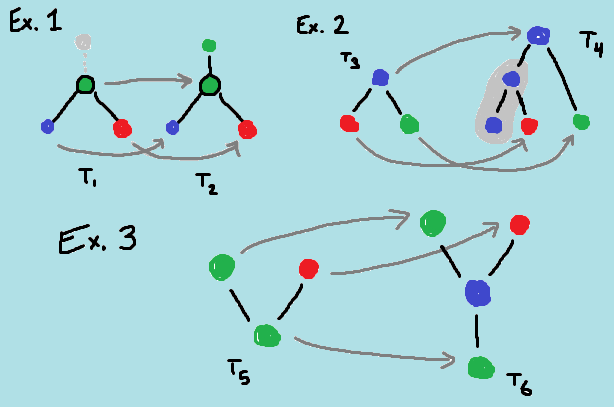

Du ska odla en skog och fördröja dess (oundvikliga) död så länge du kan.
Detta gör du genom att plantera ett frö (det första fröet blir trädets rot) som sedan växer ut grenar till nya frön, som i sin tur växer ut grenar till nya frön osv.
Regler från definitioner:
Träden vi jobbar med är acykliska, oriktade, märkta och rotade grafer. 🤓
Så vad betyder det egentligen..?
Dessa träd är matematiska träd och får därför inte innehålla slutna slingor/loops. (acyklisk)
Det finns alltså bara EN unik väg till alla frön.
Trädet måste vara sammankopplat med hjälp av grenar, riktningen spelar ingen roll. (oriktade)
Alltså är ordningen irrelevant när grenarna bildas.
Argumentet n avgör hur många olika typer av frön (färger) du har att jobba med. (märkta)
TREE(1) har bara gröna frön.
TREE(2) har gröna och röda
TREE(3) har gröna, röda och blå
Det första fröet som planteras kallas trädets rot. (rotat)
Detta frö får en outline som markering.
Regler specifika för TREE(n):
För ett givet n så får trädet max innehålla lika många frön som dess ordning i serien.
Alltså får det första trädet i TREE(n) max innehålla 1 frö (nod).
Det andra trädet i serien får max bestå av 2 st frön sammankopplade men kan även bestå av bara 1 frö.
Det tredje består av max 3 st osv.
Du får alltså inte börja med ett stort träd utan måste välja en enda nod.
Om ett träd 'innehåller' ett tidigare träd (för samma n) kommer hela skogen att dö. 🔥
Det luddiga begreppet 'innehåller' kan man se ungefär som att vi kan återskapa subträdet genom att plocka bort frön det större trädet.
I subträdet kommer två löv (frön med bara en gren) alltid att ha en unik väg till varandra, där dom möts (gemensamma förfadern) måste finnas i det större trädet.
Mer exakt innebär det: varje frö i subträdet T1 kan återfinnas i det större trädet T2 (med samma färg såklart).
Om ett frö F1 i T1 direkt följs av ett annat frö F2 måste F1:s motsvarande frö i T2 följas av det andra fröet F2 MEN fröna i T2 får ha andra frön mellan sig.
Om trädet T2 'innehåller' subträdet T1 kallar vi T1 "inf-embeddable" i T2. 🤓
Det är inte så lätt att förklara i text så här är några exempel:

Ex. 1:
Om vi plockar bort det övre gröna fröet från T2 får vi T1.
Vi ser också att vägen från det blåa till det röda lövet innehåller det centrala gröna fröet.
T2 innehåller T1
Ex. 2:
På samma sätt som innan plockar vi bort de 2 undre blåa fröna från T4 och får då T3.
Vi ser också att vägen från det röda till det gröna lövet innehåller det översta blåa fröet.
T4 innehåller T3
Ex. 3:
Här kan vi börja med att plocka bort det centrala blåa fröet från T6 får vi T5.
MEN vägen från det gröna till det röda lövet innehåller INTE det blåa fröet.
T6 innehåller INTE T5
Hajaru? Kolla på en youtube-video annars och kom tillbaka sen.
Alternativt om du föredrar mer formella regler så har Kruskal & Friedman en bättre förklaring.
Interaktion:
Plantera frö:
Vänsterklick och håll ner för meny, håll musen över fröet du vill plantera och släpp upp musknappen.
Det första fröet blir trädets rot.
Odla grenar mellan fröna:
Vänsterklicka på ett frö och dra till fröet du vill odla en gren till, släpp musknappen för att odla grenen.
Flytta frön:
Högerklicka och dra för att flytta.
Spara träd:
När du är klar med ett träd trycker du SUBMIT för att spara trädet.
Då kollar jag om du har följt alla regler, annars får du veta vad du gjorde fel.
Börja om med nuvarande träd:
Jag har inte lagt till förmågan att ta bort frön så om du har gjort fel trycker du CLEAR så rensas det nuvarande trädet.
Då får du göra om och göra rätt.
Rensa alla träd och börja om från början:
Om du känner att du har formulerat träden i fel ordning kan du börja om från början med RESET
(ordningen spear ju roll då ett träd inte får innehålla ett tidigare träd)
Förlåt för mängden text men reglerna är inte självklara, och jag har läst bra mycket mer för att lista ut en implementering...